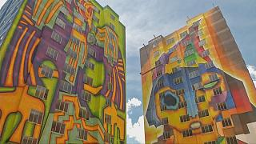
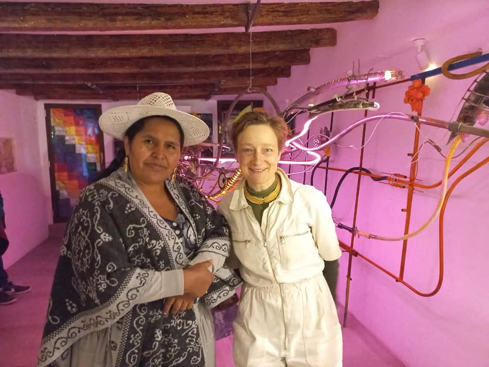
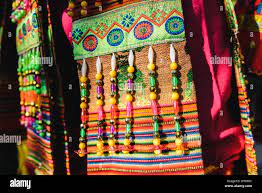
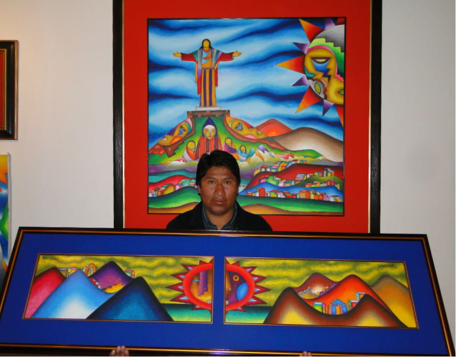

| 
 |
TIPOS DE ARTE
Pintura Popular
Pintura al Oleo
El Barroco
Fotografia
Bordaje
Arte Contemporaneo
Arte Plastico
|
ARTISTAS RECONOCIDOS
Arturo Borda (1883-1953)
Cecilio Guzmán de Rojas (1900-1950)
María Luisa Pacheco (1919-1982)
María Esther Ballivián (1927-1977)
Alfredo La Placa (1929-2016)
Enrique Arnal (1932-2016)
Gil Imaná (1933-2021)
Roberto Mamani Mamani (1962)
Rosmery Mamani Ventura (1985)
Julia Sbriller
Xavier Aguirre
|
OBRAS RECONOCIDAS
La obra Madre Tierra de Rosmery Mamani
“Colección textil” de Inés Córdova
“Madre tierra” de Rosmery Mamani
“Aires indios” de Eduardo Caba
“Del mar y la ceniza” de Yolanda Bedregal
“Wara Wara” de Antonio Díaz Villamil
“En las playas desiertas del Beni” de Lola Sierra
“El Parafonista” de Álvaro Montenegro
"Praxis", 2020, de Alfredo Román
Luna de alma esperanza de Roberto Mamani Mamani
Pachamama vestida de color y vida de Roberto Mamani Mamani
|

 |